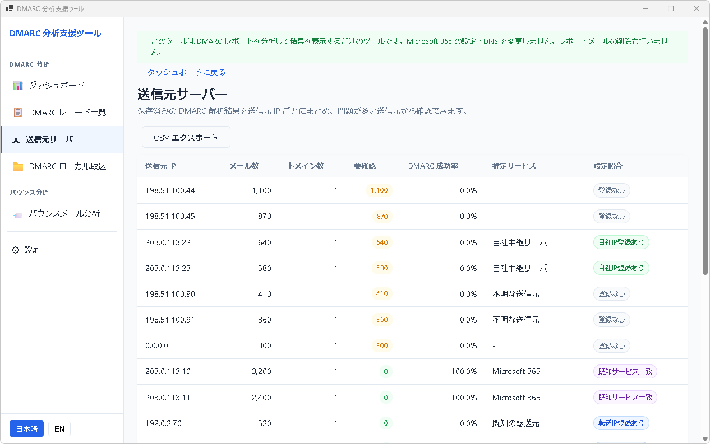

送信元サーバーで確認すること
送信元サーバー画面では、保存済みの DMARC 解析結果を送信元 IP ごとに集計します。レコードを 1 件ずつ追う前に、問題が多い送信元から確認できます。

列の意味
| 列 | 意味 |
|---|---|
| 送信元 IP | DMARC レポートに記録されたメール送信元 IP アドレスです。 |
| メール数 | その IP から送信されたと報告されたメール件数です。 |
| ドメイン数 | その IP が関係した受信側ドメイン数です。 |
| 要確認 | なりすまし疑い、設定不備、判定不能など、運用者が確認すべき件数です。 |
| DMARC 成功率 | DMARC 評価が pass になった割合です。0.0% の場合は認証失敗が集中していないか確認してください。 |
| 推定サービス | 既知の Microsoft 365 や設定済みの自社中継サーバーなど、推定できる送信元の種類です。信頼度は詳細画面に分けて表示されます。 |
| 設定照合 | 設定画面に登録した自社 IP、既知サービス、転送 IP と一致しているかを示します。一致していても DMARC が失敗している場合は SPF / DKIM / DMARC 設定を確認してください。 |
確認の順番
- まず 要確認 が多い行を確認します。
- 設定照合 が「登録なし」の行は、正規の送信元かどうかを確認します。
- 自社IP登録あり で DMARC 成功率が低い場合は、自社メールサーバーの SPF / DKIM / DMARC 設定を確認します。
- 行を選択し、詳細の関連レコードから個別レコードの結論と対応案を確認します。
- 必要に応じて CSV エクスポートし、チーム内で送信元 IP の確認を分担します。
What to check on Sending Servers
The Sending Servers screen groups saved DMARC analysis results by source IP. It helps you start with the servers that have the most items needing attention.
Column meanings
| Column | Meaning |
|---|---|
| Source IP | The source IP reported in DMARC aggregate reports. |
| Mail count | The number of messages reported from that IP. |
| Domain count | The number of receiving domains related to that IP. |
| Needs review | Items such as possible spoofing, configuration issues, or records that need manual review. |
| DMARC pass rate | The percentage of records that passed DMARC evaluation. |
| Estimated service | A local hint such as Microsoft 365 or a configured internal relay. Confidence is shown separately in the detail area. |
| Configured match | Whether the IP matches configured own servers, known services, or forwarders. A match does not automatically mean there is no issue if DMARC fails. |
Recommended order
- Start with rows that have the highest Needs review count.
- For rows with no configured match, confirm whether the source is legitimate.
- If a configured own server has a low DMARC pass rate, review SPF / DKIM / DMARC settings for that server.
- Select a row and open related record details to see the conclusion and recommended action.
- Export CSV when you need to share the source-IP review with your team.